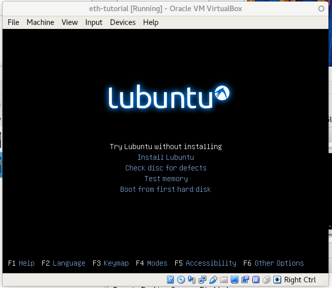
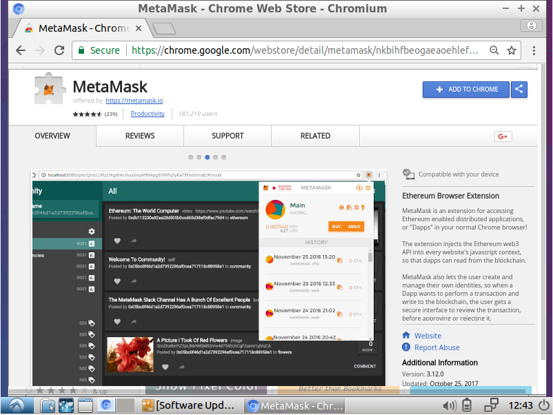
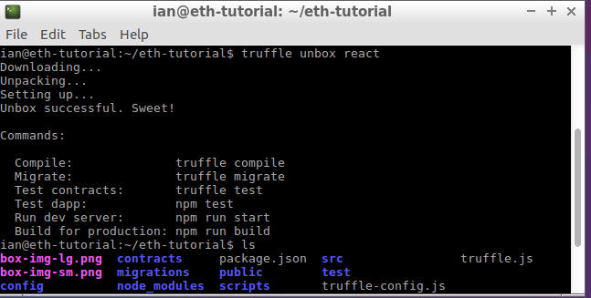

In this chapter we'll discuss how to set up your development environment to create smart contracts. Some of the tools we'll be using are:
npm.We'll be running this tutorial on a Linux operating system. Specifically, when developing this guide, we used a fresh install of Lubuntu 16.04, running in a virtual machine. If you know what you're doing, you should be able to follow along on the operating system of your choice, but use Lubuntu if you want to be sure everythign works the same.

The first piece of software we'll want to install is Node.js. We'll use its package manager, npm, to install our other tools and use its webserver while developing our frontend.
The version of Node in the official Ubuntu repositories is older, and doesn't support all of the tools in this tutorial. There are a couple extra steps in getting the proper version.
First, install curl.
$ sudo apt-get install curl
Then download and run the installation script provided by Node, and finally run apt-get install to install the current version of Node.*
$ curl -sL https://deb.nodesource.com/setup_6.x | sudo -E bash -
$ sudo apt-get install -y nodejs
Check that the install went successfully:
$ node --version
v6.11.5
* Conscientious coders will be rightly wary of any notion of piping curl into bash. This script just checks that you're running a derivitive of Debian, and adds some PPAs to your etc/sources.list, and adds a public key to your keystore. If you want to err on the side of caution, download the setup script as a text file and run the commands manually.
Now that Node is installed, we can use its package manager to install testrpc.
$ sudo npm install -g ethereumjs-testrpc
Test that the installation went successfully:
$ testrpc
EthereumJS TestRPC v4.1.3 (ganache-core: 1.1.3)
Available Accounts
==================
(0) 0xc97b0c8327dc54abb48c1a8204e9baf26025d09c
(1) 0x1c7bf6b109f73da1a92b275088d50a45cf9c02e8
(2) 0x9447991eb216fa982b124f72c35d0faaf2391849
...
Again, we'll use Node's package manager*:
$ sudo npm install -g truffle@3.4.11
Test the installation:
$ truffle version
Truffle v3.4.11 (core: 3.4.11)
Solidity v0.4.15 (solc-js)
You'll notice that truffle includes solc-js, a compiler for Solidity, the lanuage in which we'll be writing our smart contract.
*This guide was written using Truffle version 3.4. Version 4 has since been released, including some changes that affect our process. If you want to follow this guide exactly, use 3.4.11. If you want to use version 4, you should be able to follow along in general but may run into occasional differences.
We'll install git, the version control software. Git is required by truffle to download templates that we will use, and we can use it to track our own chanegs as well.
We're going to interact with our web front-end using Chromium, which is the open-source version of Google's Chrome browser, with the plugin Metamask, which allows us to interact with Ethereum apps.
$ sudo apt-get install chromium-browser
Launch Chromium and tell Ubuntu you want it to be you default browser. This will be important later when we have node launch a browser to test our app.
Now that you have Chromium installed, head to the Chrome Web Store and install MetaMask. Restart Chromium and it should be ready to use. 
Finally, we're going to need a couple other packages that truffle will use when setting up our environment. We won't use these directly.
$ sudo apt-get install make gcc g++
Make a directory to hold out project:
$ mkdir eth-tutorial
$ cd eth-tutorial
Truffle has something called Boxes, which are pre-constructed frameworks that provide a good starting point. If we wanted, we could start from scratch with truffle init, but instead we're going with the "react" box, which is built out one step further. This provides a basic react.js page that we can extend to use as our front end.
ian@eth-tutorial:~/eth-tutorial-testing $ truffle unbox react

If everything has been installed correctly, you should see:
Downloading...
Unpacking...
Setting up...
Unbox successful. Sweet!
Commands:
Compile: truffle compile
Migrate: truffle migrate
Test contracts: truffle test
Test dapp: npm test
Run dev server: npm run start
Build for production: npm run build
We've set up our develoment machine so that we're ready to develop and test smart contracts. In the next chapter, we'll write actual code and compile and deploy our first smart contract.